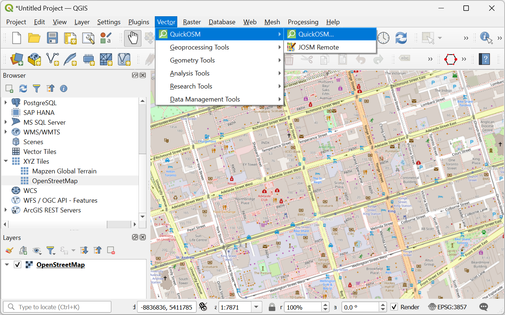
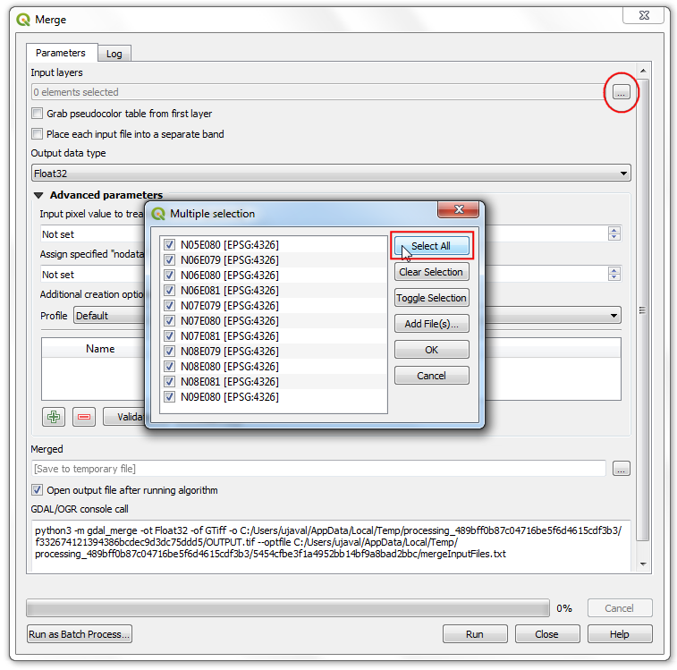
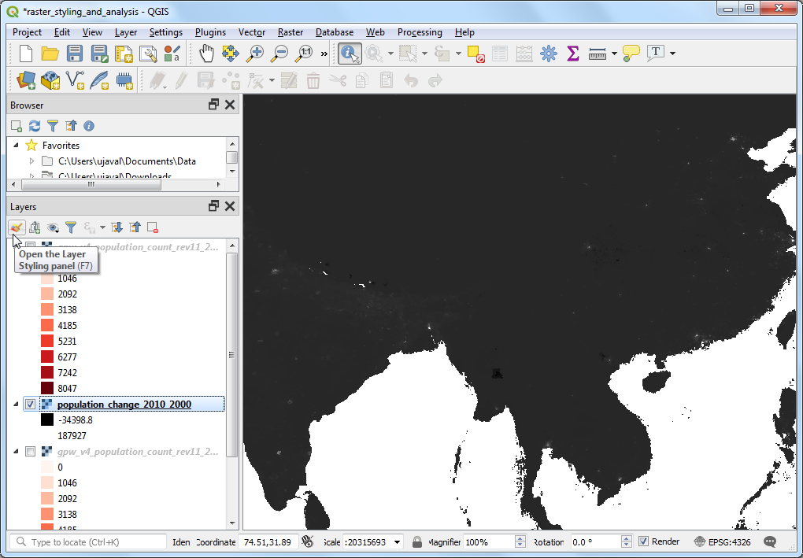

Basic Filtering and Styling with Expressions (QGIS3)¶
Contributed by: Steven Kim
Expressions offer a powerful way to manipulate attribute values, geometries and variables to dynamically modify map features on the fly. This tutorial is an introduction to some common expressions and how they are used in map making.
Overview of the task¶
We will use expressions to filter features by attribute from a Natural Earth country layer, and then style them to create a map of South East Asia with each country styled in a shade of green.

Get the data¶
Natural Earth has the admin shapefiles for countries. On the downloads page look for Cultural option under the
Medium scale data.

Download the
Admin 0 - Countriesshapefile. You will see thene_50m_admin_0_countries.zipfile downloaded which is used for this tutorial.

For convenience, you may directly download a copy of the above layer from below:
Data Source [NATURALEARTH]
Procedure¶
Locate the
Natural_Earth_quick_start.zipfile in the QGIS Browser and expand it. Select thene_50m_admin_0_countries.shpfile and drag it to the canvas.

A new layer
ne_50m_admin_0_countrieswill now be loaded in QGIS and you should see a map of the world. Click on Open Layer Styling Panel.

Switch from Single Symbol to Rule-based.

Double-click on the default rule to enter the Edit Rule dialog.

To filter using an expression, click the Filter ε.

You have entered the Expression Builder. This dialog provides the main interface to write expressions and can be accessed in many ways. It contains an input box on the left, a list of functions in the middle and a help box on the right.

From the list in the middle, expand to explore the fields found in the
ne_50m_admin_0_countrieslayer.

Click to select
SUBREGIONfield and click All Unique on the right panel to view all unique subregion values.

After exploring, select the Expression box on the left to input the expression as follows and click OK.
"SUBREGION" = 'South-Eastern Asia'
You should see SE Asia. Pan and zoom to the center to the region in your map window.

Now that we have used an expression to filter features, let us use an expression to color each country based on a field
MAPCOLOR7. Scroll-down to the Symbol options in the styling panel and select Simple Fill to bring up styling options such as fill color, line color and more. Click on Data define override button for the Fill color and select Edit… on the menu.

This brings up the Expression Builder dialog for Fill color. Enter the following expression:
set_color_part(ramp_color('Greens',scale_linear("MAPCOLOR7",1,7,0.2,1)),'alpha',100)
This expression contains multiple functions: set_color_part() to set alpha or transparency, ramp_color() to apply a color ramp and scale_linear() to use the field MAPCOLOR7 in setting the color for each country. In this example, we are using greens, setting the alpha at 100 out of 255 and scaling MAPCOLOR7 from it’s original range of 1-7 to 0.2-1, which will look nice with ramp_color.

Σημείωση
The Natural Earth data layer has several fields named MAPCOLOR7, MAPCOLOR8 etc. These fields contain numeric values that are used to color the map so that adjacent polygons aren’t the same color. There are versions with 7,8,9 or 13 colors.
Click OK to exit the dialog. At the Edit Rule dialog, change Stroke Style to . You should see the countries in green now. Click Apply.

We have created a beautifully styled map by filtering and applying a color ramp to the data layer by just using expressions.

If you want to give feedback or share your experience with this tutorial, please comment below. (requires GitHub account)